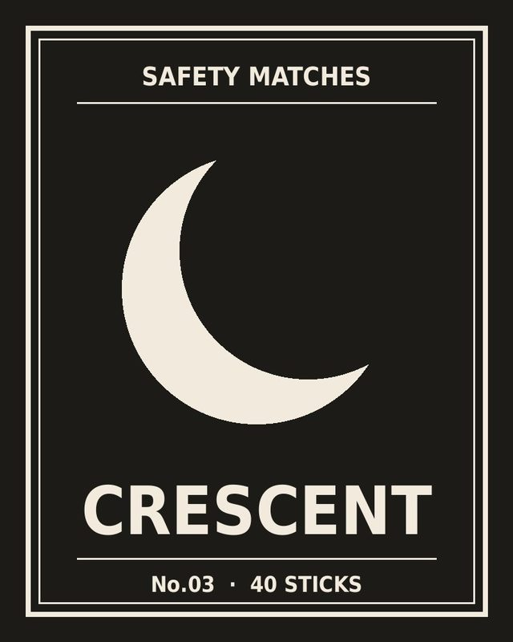
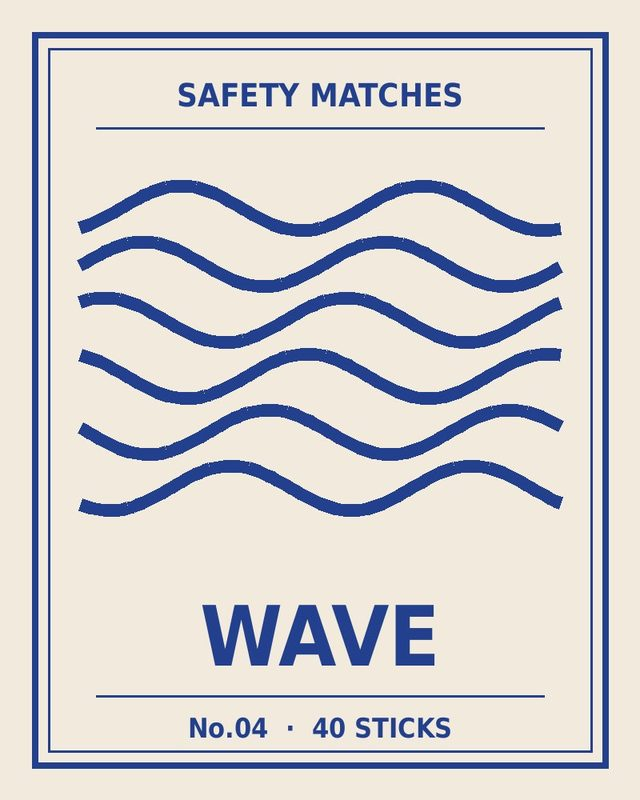
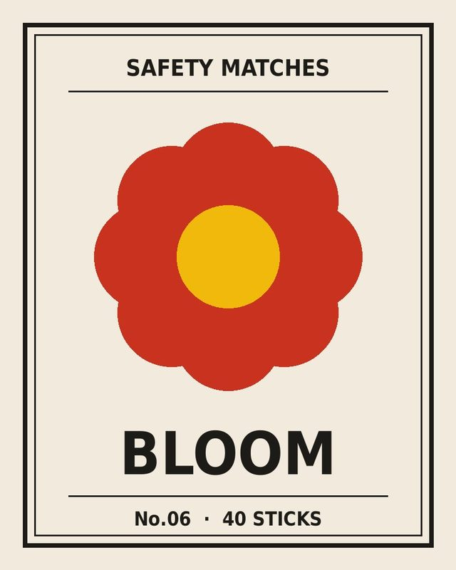
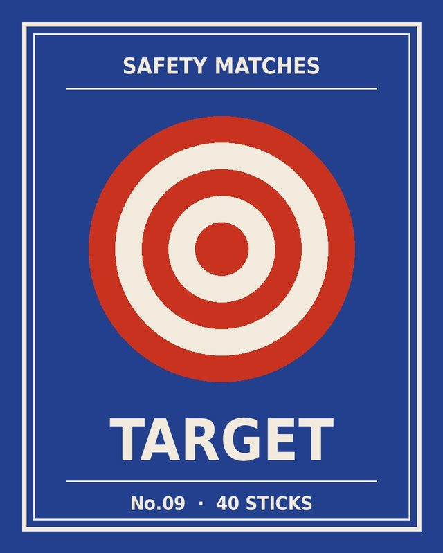

⚡ Visual Noise Collection · 9 ชิ้น
Matchbox Labels
ฉลากกล่องไม้ขีดไฟที่เก็บจากตลาดนัดและร้านของเก่า แต่ละแผ่นกว้างเพียง 36 × 52 มม. แต่ใช้สี รูปทรง และตัวอักษรได้เต็มพื้นที่แบบไม่มีกั๊ก

ชิ้นโปรด No.01
Sunrise
ชิ้นแรกที่เริ่มเก็บ เจอในกล่องของเก่าที่ตลาดนัด พระอาทิตย์ครึ่งดวงกับเส้นรัศมี 13 เส้น ใช้แค่สามสี แต่อ่านออกได้จากระยะไกล
✨ แกลเลอรีแบบสลับขั้วความวุ่นวาย
Sunrise
ท้องฟ้า · 2518

Night Star
ท้องฟ้า · 2521

Crescent
ท้องฟ้า · 2516

Wave
ธรรมชาติ · 2524

Mountain
ธรรมชาติ · 2519

Bloom
ธรรมชาติ · 2527

Diamond
เรขาคณิต · 2522

Stripe
เรขาคณิต · 2525

Target
เรขาคณิต · 2520